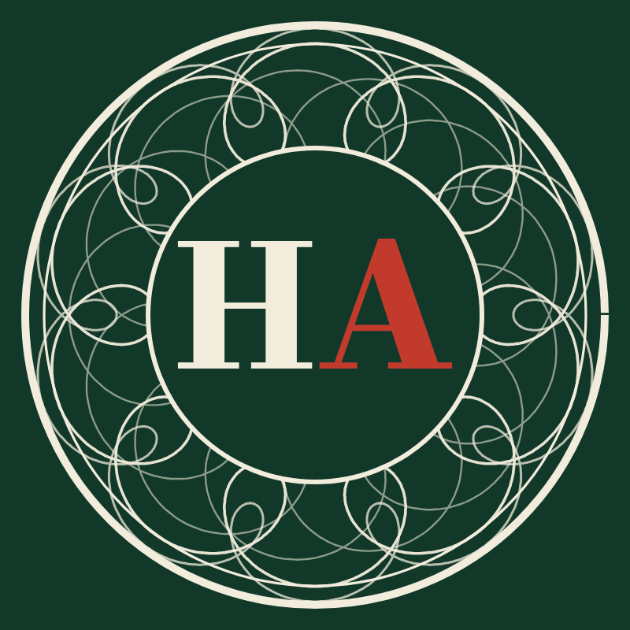
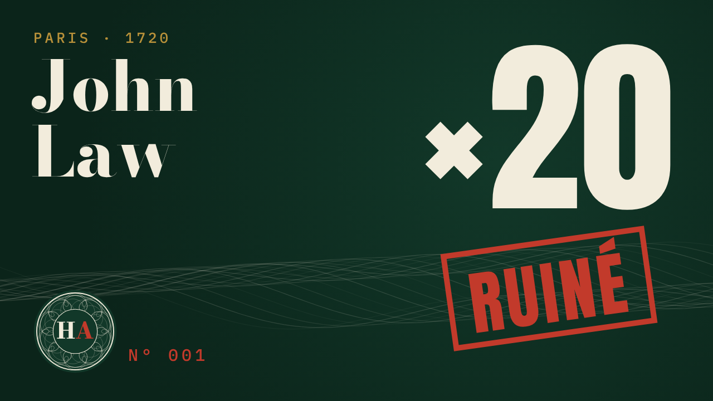
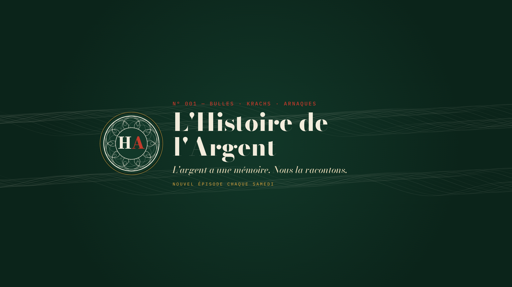

Une chaîne qui se présente comme un billet de banque : encre fiduciaire, papier, guilloché, numéro de série et tampon rouge. Tout ce qui est publié sous ce nom suit cette charte.
Les grandes chaînes du créneau ont un point commun : on les reconnaît en une seconde, sans lire le nom. Notre univers ne vient pas d'une autre chaîne, il vient de l'objet raconté : le billet de banque. Ses codes existent depuis trois siècles, ils inspirent confiance, et John Law en est le point de départ historique.
Fond vert encre fiduciaire, texte couleur papier. Pas de noir pur, pas de fond blanc.
Rosaces et ondes tracées par calcul, comme les motifs anti-contrefaçon. C'est notre texture.
Chaque épisode porte un numéro : N° 001, 002… Il apparaît dans l'intro, la miniature et la description.
KRACH, RUINÉ, FAUX, ANNULÉ : un seul mot, une seule fois par vidéo, au moment de bascule.
⚠️ Observations éditoriales sur des chaînes publiques, pas des données mesurées.
| Chaîne | Ce qu'elle fait bien | Notre traduction |
|---|---|---|
| Kurzgesagt | Un style graphique si constant qu'on le reconnaît sans logo. | Encre, papier, guilloché, tampon : jamais d'écart. |
| MagnatesMedia | Un personnage au centre de la miniature, un récit documentaire. | Un nom propre et une démesure chiffrée sur chaque miniature. |
| Coffeezilla | Les preuves à l'écran : documents, captures, sources. | Source affichée sous chaque chiffre. La rigueur fait partie du style. |
| How Money Works · Economics Explained | Un chiffre clair par écran, des graphiques lisibles. | Un compteur géant en Anton, une seule courbe à la fois. |
| Nota Bene (FR) | L'histoire portée par une voix et une personnalité. | La voix d'Alaa et une leçon assumée à la fin de chaque épisode. |
| Heu?reka (FR) | La finance rendue accessible, sans jargon gratuit. | Chaque terme technique est expliqué avec un objet du quotidien. |
L'argent a une mémoire. Nous la racontons.
« L'argent oublie vite. Nous, non. »
L'argent a une mémoire. Bulles, krachs, arnaques, racontés et sourcés.
Pourquoi celle-ci : elle tient en cinq mots, elle donne une personnalité à l'argent, elle annonce l'histoire sans le mot « histoire », et elle se traduit sans perte : Money remembers.

Version principale · avatar 800 × 800logo-mark.svg (sur encre) et logo-mark-paper.svg (sur papier).Le rouge a un sens : il signale la perte, la fraude ou la chute. Une courbe qui monte reste couleur papier et ne passe au rouge qu'à partir du sommet.
1,5 s : le guilloché se dessine trait par trait, puis le numéro de série s'imprime en rouge.
Chaque chiffre clé défile comme un compteur mécanique, en Anton, avec la date en Plex Mono dessous.
Le tampon arrive à 160 % et s'écrase à 100 %, penché à −8°. Un bruit sec, une seule fois par épisode.

Miniature type · N° 001
2560 × 1440 · texte dans la zone sûre de 1546 × 423Les trois premières secondes suivent toujours le même ordre : une image concrète, un fait qui ne devrait pas être possible, puis ce que le spectateur va comprendre.
| N° | Hook | Mécanique |
|---|---|---|
| 001 | « En 1719, une action coûte 500 livres. Un an plus tard, 10 000. Ce qui suit a ruiné un royaume. » | Chiffre sourcé → bascule annoncée |
| 002 | « Cette fleur valait une maison. Trois semaines plus tard, elle ne valait plus rien. » | Prix délirant → retournement |
| 003 | « Il n'a pas inventé l'arnaque. Il lui a juste donné son nom. » | Fausse croyance corrigée |
| 004 | « En 1923, on payait son café avant de le boire. Parce qu'après, il coûtait plus cher. » | Geste quotidien rendu étrange |
| 005 | « Votre banque n'a pas l'argent que vous y avez déposé. Et c'est légal. » | Révélation qui concerne le spectateur |
⚠️ Le N° 002 (« trois semaines ») et le N° 004 (le café payé d'avance) sont des récits répandus : à sourcer précisément avant d'enregistrer, ou à reformuler.
Couleurs, polices et formats sont définis une seule fois, dans config/theme.json. Les vidéos, l'avatar, la bannière et les miniatures sont tous rendus par Remotion à partir de ce fichier (npm run assets). La rosace est calculée dans src/Rosette.tsx. Si une couleur change, elle change partout.